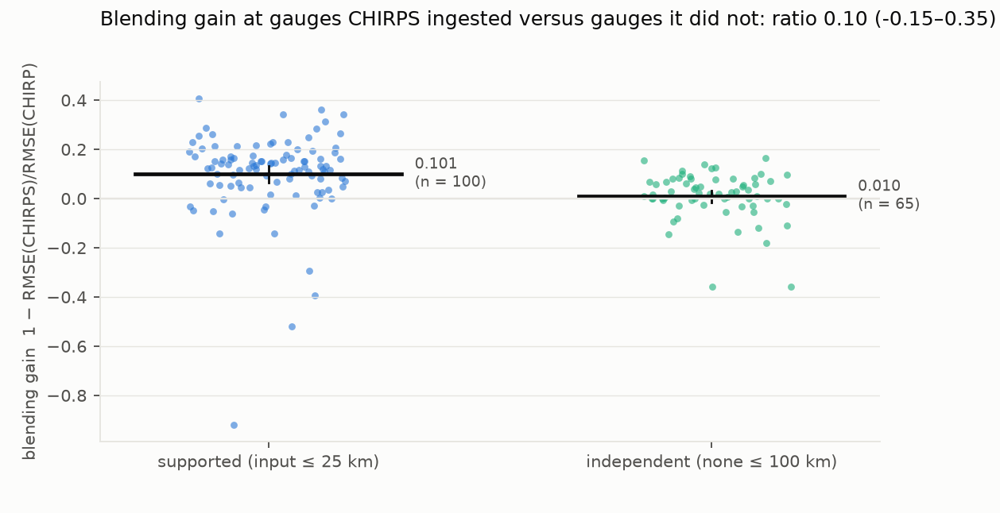
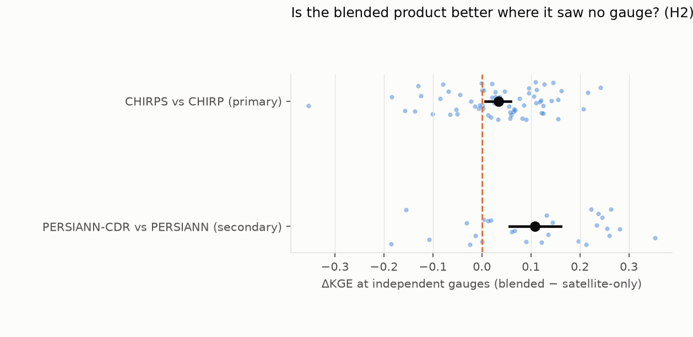
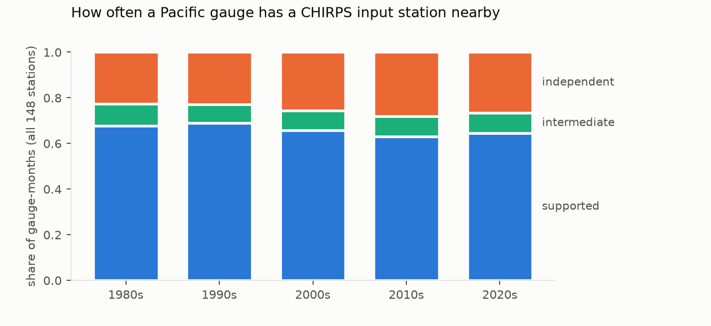

Verdict: Supported (circularity); the blended product is still marginally better where it saw no gauge.
- H1 (the blending gain at independent gauges is at most half the gain at supported gauges): Supported.
- Supported gauges (CHIRPS ingested a station within 25 km that month): blending cuts the pentad RMSE by 10.1% (95% CI 6.5–13.2%).
- Independent gauges (no input station within 100 km): it cuts it by 1.0% (−1.5 to +3.3%).
- The ratio is 0.10 (−0.15 to 0.35), below the 0.5 bar across the whole interval.
- It stays below 0.5 under both alternative distance thresholds and on log-transformed rainfall (0.31, 0.22–0.40).
- H2 (at independent gauges the satellite-only twin is better): Refuted.
- CHIRPS still edges CHIRP on the Kling–Gupta efficiency at independent gauges: ΔKGE +0.034 (+0.007 to +0.059).
- Under the widest distance threshold the interval includes zero (+0.021, −0.007 to +0.047).
- The secondary pair (PERSIANN-CDR against PERSIANN, 2001–2020) points the same way but is weaker.
- Its gain ratio is 0.72 (0.49–1.00), which is Inconclusive.
- At gauge-free cells, CDR is clearly better on KGE (+0.108).
- This pair also differs in algorithm, and its gauge label is far coarser: a 2.5° GPCC cell, not 25 km.
What this means for users. Validating CHIRPS at Pacific gauges overstates its advantage over CHIRP about tenfold, because about two-thirds of gauge-months sit within 25 km of a station CHIRPS blended in. Away from input stations, the blending is close to neutral: it slightly improves the overall skill score, but barely moves the error.
In plain terms
Satellite rainfall maps are widely used in the Pacific, where rain gauges are few. The best-known maps blend satellite estimates with the gauges that do exist, and they are usually checked against those same gauges. That is a bit like marking a test against the answer key the student was given.
We used the fact that one popular product, CHIRPS, has a twin built the same way but without any gauges (CHIRP), and that CHIRPS publishes which stations it used each month. That let us compare the two products at gauges CHIRPS had used, and at gauges more than 100 km from any it used.
At gauges CHIRPS had used, the blended map was about 10% more accurate than its satellite-only twin. At gauges it had not used, the improvement almost disappeared, to about 1%.
So the usual checks make the blended map look much better than it is across most of the ocean region, where there are no gauges. It is not worse than the satellite-only version there, and is still slightly better on one combined skill score.
In any decade, CHIRPS uses about a third of Pacific gauges. A benchmark built only from the others would give Pacific climate services a fairer test of any rainfall map. The station lists and labels from this study are released for that purpose.
What was asked
Over Pacific islands, rainfall products are validated at the few long-running gauges, mostly airports. Those are also
the gauges blended into products such as CHIRPS. The study asks two preregistered questions (plan.md):
- H1 (circularity). At gauges CHIRPS did not ingest, is the blending gain at most half what it is at gauges it did?
- H2 (ranking reversal). At those independent gauges, is the satellite-only twin actually better?
What was already known
- Wild, Chua & Kuleshov (2021, Remote Sensing 13:3929) evaluated products over six south-west Pacific sub-regions against MSWEP, which is itself gauge-blended. It is not gauge-based and not twin-based.
- A 2026 Fiji study evaluated products against national gauges without separating ingested from independent ones.
- No study was found that uses a twin pair and the published input-station lists to separate circular from independent skill over the Pacific (search 2026-10-18).
How it was done
Gauges. - GHCN-Daily precipitation for every Pacific Island station: 148 stations with data after 1985. - Only values with a blank quality flag are kept, and runs of five or more identical non-zero days are removed. - Pentad totals use the CHIRPS calendar (six per month) and complete pentads only.
Products. - CHIRP and CHIRPS v2.0 pentads at 0.05°, 1981–2025: 3,240 pentads each, every one read, at all 148 station pixels. - Pixels were read by HTTP range requests. - The data server refused parallel readers partway through (D1 addendum). Extraction resumed as one paced stream. - Failed reads were recorded as errors and re-read later, never as zero rain. - The plan's pre-check grid masked 14 stations as ocean. The CHIRPS pentad files used here have values at 147 of the 148. - The exception (FMC00914251, Micronesia) is masked as ocean, so it has no CHIRPS skill. It is reported as a masked station: 410 gauge pentads, all independent. - The secondary pair: PERSIANN (satellite-only) and PERSIANN-CDR (bias-adjusted to GPCP, which uses GPCC gauges), daily at 0.25°, 2001–2020: 7,305 days each, complete.
Timing. Each station's gauge pentads are formed with a day shift of −1, 0 or +1, chosen to maximise the correlation with CHIRP (the satellite-only twin) and then applied to every product. - 67 stations take +1, 53 take 0 and 2 take −1. - The +1 shifts are consistent with gauges recording rain for the 24 hours to a morning observation.
Labels. Each gauge-month is labelled by its distance to the nearest station in CHIRPS's published input list for that month: - supported: within 25 km; - independent: none within 100 km; - intermediate: in between, excluded.
For the secondary pair, a gauge-month is supported if its 2.5° GPCC cell held at least one gauge.
Skill. For each station and stratum with at least 30 pentads: - the blending gain g = 1 − RMSE(blended)/RMSE(satellite-only); - ΔKGE = KGE(blended) − KGE(satellite-only).
Stations need at least 100 valid pentads: 122 qualify. H1 uses the ratio of station-mean gains, and both hypotheses use a station-block bootstrap (2,000 resamples).
Results
H1: circularity (results/tables/primary.json, results/figures/F1_gain_by_stratum.png)
| stations (sup / ind) | gain, supported | gain, independent | ratio (H1) | |
|---|---|---|---|---|
| Primary: 25 / 100 km | 100 / 65 | 10.1% (6.5–13.2) | 1.0% (−1.5 to 3.3) | 0.10 (−0.15 to 0.35) |
| Thresholds 10 / 50 km | 97 / 71 | 10.0% | 1.3% | 0.13 (−0.09 to 0.39) |
| Thresholds 50 / 150 km | 104 / 53 | 10.0% | −0.9% | −0.09 (−0.41 to 0.17) |
| log(1 + P) pentads | 100 / 65 | 12.8% | 3.9% | 0.31 (0.22 to 0.40) |
| Secondary: PERSIANN-CDR vs PERSIANN | 102 / 28 | 10.7% | 7.7% | 0.72 (0.49 to 1.00) |
- H1 is Supported. The ratio's upper bound, 0.35, is below 0.5, and every sensitivity analysis agrees.
- The farther from an input station, the smaller the gain. At the 150 km threshold, the independent gain is slightly negative.
- The secondary pair is Inconclusive. Its "independent" label (no gauge in a 2.5° cell) is much coarser, and it has only 28 independent stations.


H2: ranking reversal (results/figures/F2_dkge_independent.png)
| pair / variant | ΔKGE at independent gauges |
|---|---|
| CHIRPS − CHIRP (primary) | +0.034 (+0.007 to +0.059) |
| thresholds 10 / 50 km | +0.037 (+0.012 to +0.058) |
| thresholds 50 / 150 km | +0.021 (−0.007 to +0.047) |
| log(1 + P) | +0.038 (+0.016 to +0.058) |
| PERSIANN-CDR − PERSIANN (secondary) | +0.108 (+0.056 to +0.161) |
- H2 is Refuted. At independent gauges CHIRPS is not worse than CHIRP. It is slightly better on KGE, which weighs correlation, bias and variability together, even though it barely improves RMSE there.
- Where the KGE gain comes from (
station_skill.csv, station means at independent gauges):- mostly bias and variability: the bias ratio β and variability ratio γ move closer to 1 by 0.026 and 0.031;
- a little from correlation: r rises by 0.015.


How often Pacific gauges are independent (results/figures/F3_label_shares.png, by_country)
- Most gauge-months are supported. Across all 148 stations, about 62–68% of gauge-months are supported in every decade since the 1980s, and only 22–28% are independent.
- About a third of Pacific gauges are ingested. In any decade, CHIRPS ingests 32–41% of the Pacific gauges themselves.
- Independent pentads are concentrated in a few places. Of 221,730 usable station-pentads, 37,938 (17%) are independent, mostly in Fiji (20,275) and Palau (8,306).
- Guam's 14 stations have no independent pentads at all.


What this does and does not show
- It shows that the standard gauge validation of CHIRPS over the Pacific is largely circular. The blending advantage measured at ingested gauges (10%) is about ten times what holds at independent gauges (1%).
- It does not show that blending hurts away from gauges. On KGE, CHIRPS is marginally better than CHIRP even at independent gauges.
- The label is monthly. CHIRPS blends at pentad scale with its own station set, so a monthly list can miss pentad-only inputs. That would make some "independent" gauges actually supported, which would bias the independent gain upwards, against H1.
- Independent gauges are not a random sample. They cluster in Fiji and Palau. Island representativeness affects both twins equally, so it moves skill but not, in principle, the within-pair gain.
- One product family. CHIRPS and CHIRP are the only twin pair with published input lists. The PERSIANN pair is suggestive only.
Process and deviations
- Preregistration. The plan was committed before any product value was compared with any gauge.
- D1: faster pixel reads. A direct reader was verified identical to GDAL on 1,776 cells, and parallel workers were added.
- D1 addendum: the CHC server returned HTTP 403 to the parallel workers. Extraction resumed as one paced stream with a resume probe, and every pentad was eventually read.
- Two fixes in
code/analysis.pyafter the results:- Before any result. Error rows had made the pentad-value column text, so the analysis now reads it as numbers.
The first run failed before producing anything (
git log). - After the results. The masked-station check missed a station whose CHIRPS pentads were all empty. The count went from 0 to 1, with no effect on any skill number.
- Before any result. Error rows had made the pentad-value column text, so the analysis now reads it as numbers.
The first run failed before producing anything (
- The figures' margins were adjusted after the results.
Reproducing it
code/gauges.py, code/labels.py, code/extract_pentads.py chirp and chirps, code/fetch_persiann.py,
code/extract_persiann.py, code/analysis.py, code/figures.py.
- The direct CHIRP reader is checked by
code/check_chirp_reader.py. - Results are in
results/tables/:primary.json,station_skill.csv,station_skill_secondary.csvandbenchmark_stations.csv. The last is the released list of stations with their labels.